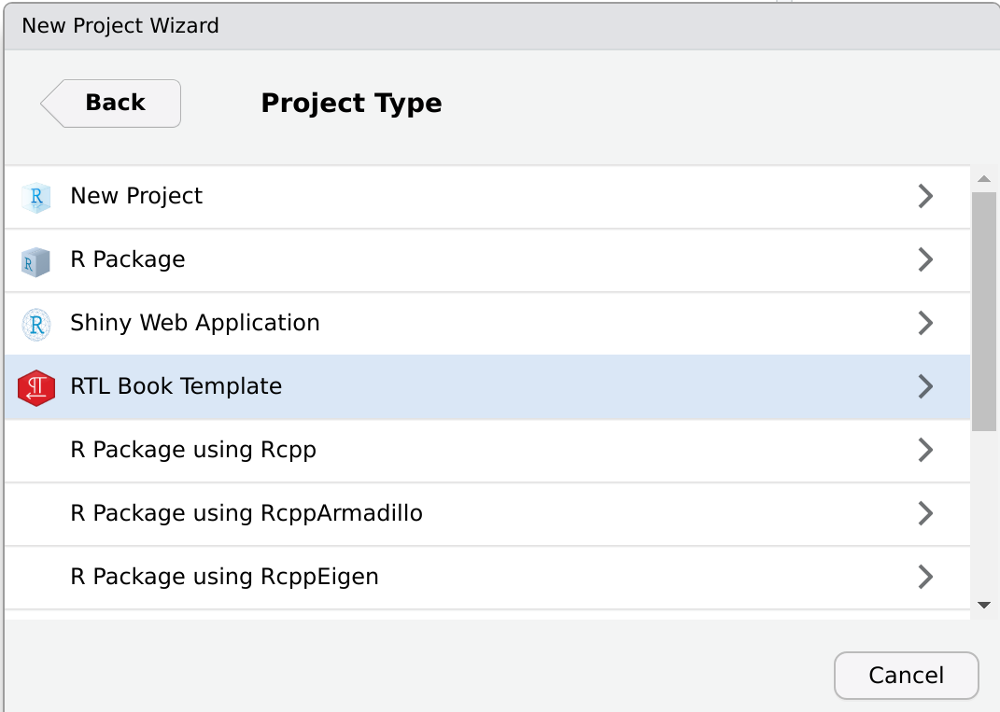
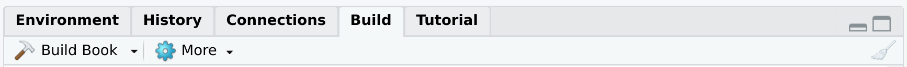
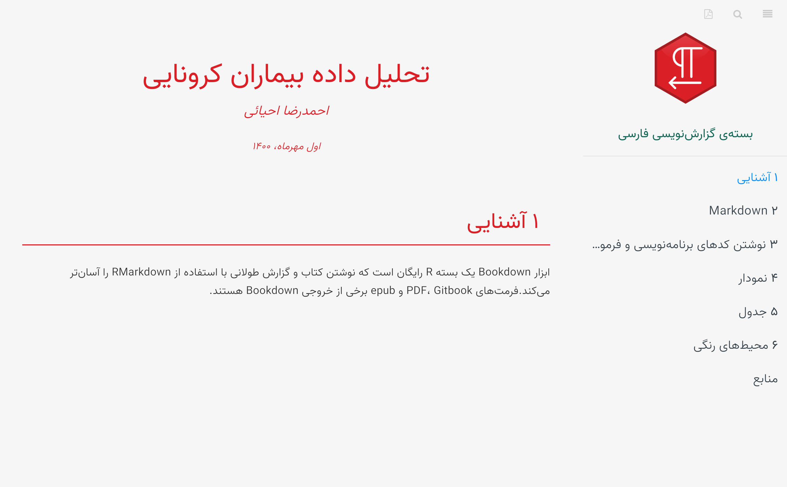

Write Book and long-form Report with Bookdown
Source:vignettes/articles/03_bookdown_document.Rmd
03_bookdown_document.RmdUsing the MPI Book Template, you could create complex documents in HTML and PDF. This template is built using the bookdown package. bookdown’s primary goal is to generate books and ebooks from R Markdown files, which is simpler than LaTeX. Another benefit of using this template is that it is well-structured for producing documents with several chapters and handling a big number of files.
To open this template, you first go to Projects > New Project > New Directory
This will lead you to the list of projects. scrol list and find the MPI Book Template. Click on it.

After that, enter the name of the directory and set path and click “Create Project”. This will generate a new directory with an.Rproj file and the name you specified in the directory name.
After the restart session, a project with the following structure will be opened.

Each component of this project is required to set up one of the bookdown’s features, which we shall detail below.
- index.Rmd The primary document information, such as the title, author’s name, and data, are entered in this file.You can also use the PDF report features to design a book PDF output format. For more information, you can see (PDF Report Template Customization)[https://ehyaei.github.io/MPIThemes/articles/articles/01_pdf_report_template_customization.html]
---
title: "Statistical Analysis of Behavioral Data"
date: "01 November, 2021"
author: [Ahmad Ehyaei, Sara Ershadmanesh]
affiliation: Max Planck Institute for Biological Cybernetics
location: Tübingen
titlepage: true
book: true
page-background-color: f6f6f6
logo-primary: src/icon/MPILogoWhite.eps
titlepage-top-color: f03e4c
titlepage-text-color: FFFFFF
titlepage-author-text-color: f03e4c
author-vjust: 80
chapter-title-color: E90649
titlepage-bottom-background: src/img/bottom_background.png
site: bookdown::bookdown_site
bibliography: [chapters/bib/book.bib, chapters/bib/packages.bib]
biblio-style: apalike
link-citations: yes
---The following figure illustrates the important features of the title page.
- output.yml
Output formats can be set in the YAML metadata of the book’s initial Rmd file, or in a separate YAML file named “_output.yml.” We specified various settings for HTML, PDF, and ePubs. toc-logo and toc-title are related to the logo and tex at the top of the gitbook table of content. In the following gitbook output parameters.
---
bookdown::gitbook:
css: [src/css/style.css,src/css/environments.css]
config:
sharing: null
info: no
fontsettings: null
toc:
collapse: section
before: |
<li class="toc-logo"><a href="./"><img src="src/icon/MPIBCGreen.png"></a></li>
<li class="toc-title"><a style="color: #116656;" href="./">Max-Planck Institute</a></li>
scroll_highlight: yes
download: ["pdf"]
---In the YAML’s PDF part, we set the path of the latex template and other files.
---
bookdown::pdf_book:
latex_engine: xelatex
keep_tex: true
toc_depth: 5
pandoc_args:
- "--top-level-division=chapter"
- "--wrap=preserve"
- "--lua-filter=src/tex/template.lua"
dev: "cairo_pdf"
template: "src/tex/template.tex"
includes:
in_header: "src/tex/preamble.tex"
before_body: "src/tex/before_body.tex"
after_body: "src/tex/after_body.tex"
---- chapters & bookdown.yml
This folder contains RMarkdown files. Each of these files is one of the chapters of the book. You can set the chapters order with a _bookdown.yml file.
---
book_filename: "Report"
delete_merged_file: true
tables: yes
rmd_files:
- "index.Rmd"
- "chapters/Introduction.Rmd"
- "chapters/Markdown.Rmd"
- "chapters/Code_Formula.Rmd"
- "chapters/Figure.Rmd"
- "chapters/Table.Rmd"
- "chapters/Environment.Rmd"
- "chapters/Reference.Rmd"
---We may start the project after inputting the document information and setting the output style by clicking the build button in the rstodio toolbar.

We may also use the short key Shift+Ctrl+B to do this. Following the completion of the project, two PDF files and a gateway are created at the same time. To view the PDF, you can click on the PDF icon at the top of the gitbook.
